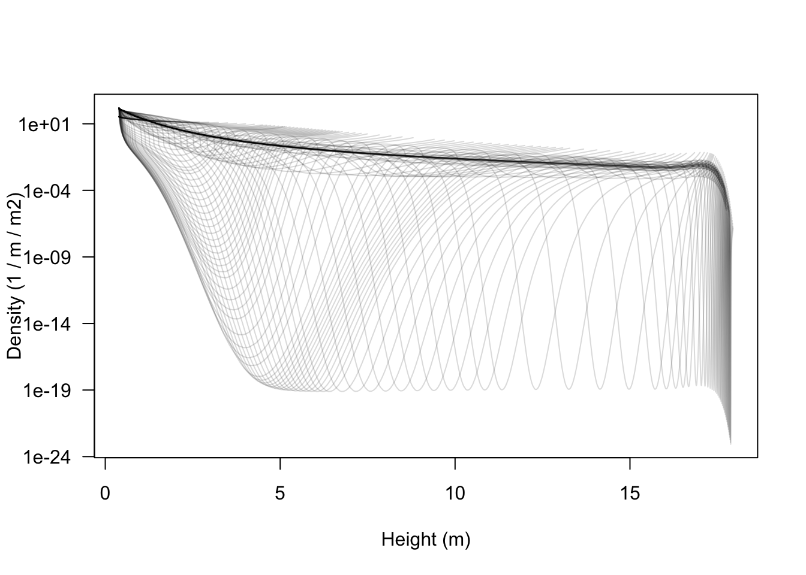
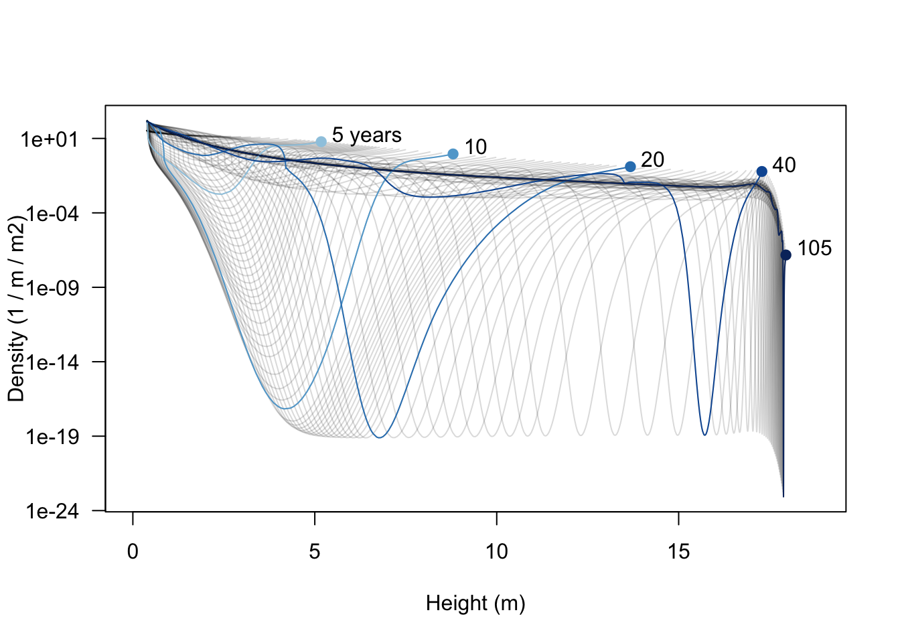
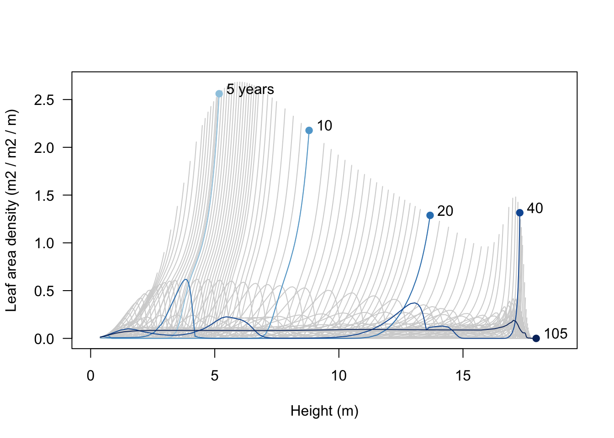
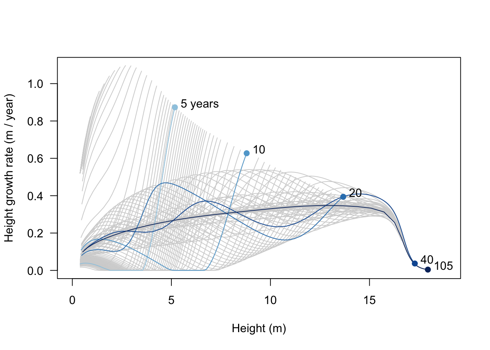
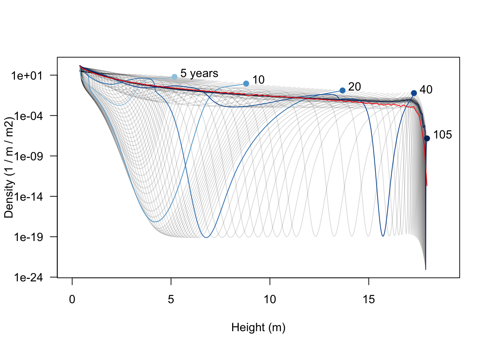

library(plant)
p0 <- scm_base_parameters("FF16")
p <- expand_parameters(trait_matrix(0.0825, "lma"), p0, birth_rate_list = 17.31)
patch <- run_scm(p, refine_schedule = TRUE)$parameters
result <- run_scm(patch, collect = TRUE)Emergent properties
example
The aim here is to use the plant package to investigate dynamics within a patch of competing individuals, focusing on emergent patch-level properties, rather than properties of individuals within the patch.
Note
A few steps below reach into plant’s internal helpers (plant:::trapezium, plant:::pad_list_to_array). These are not part of the public API and may change or disappear between releases. They are kept here exactly as written because the example depends on them; treat them as implementation detail rather than something to build on.
We’ll work with a single species at birth rate close to demographic equilibrium:
Node densities
There was a bit of hassle in Patches vignette in plotting all trajectories along with a couple of lines corresponding to focal years. We’re going to do the same thing here:
closest <- function(t, time) {
which.min(abs(time - t))
}
last <- function(x) {
x[[length(x)]]
}
times <- c(5, 10, 20, 40, dplyr::last(result$steps$time))
i <- vapply(times, closest, integer(1), result$steps$time)
blues <- c("#DEEBF7", "#C6DBEF", "#9ECAE1", "#6BAED6",
"#4292C6", "#2171B5", "#08519C", "#08306B")
cols <- colorRampPalette(blues[-(1:2)])(length(i))
species_1 <- dplyr::filter(result$species, species == "1")
height <- sdd_matrix(species_1, "height")
log_density <- sdd_matrix(species_1, "log_density")As with height in the Patches vignette, node density is a matrix of time and node identity. However, to show the profiles for a given time slice using matplot it is convenient to have each column be the state of the system at a given time, so here each row is a node and each column is a time step:
density <- exp(log_density)
matplot(height, density, type="l", lty=1,
col=util_colour_set_opacity("black", 0.15),
xlab="Height (m)", ylab="Density (1 / m / m2)", las=1,
log="y")
Note that the densities here can be extremely low, and yet individuals within the nodes continue to grow in size; this is the “atto-fox problem”, though here we drop down as low as 8 yocto individuals / m / metre squared (a yocto-x being 1 millionth of an atto-x). Anyway….
The trajectories are easier to understand if a few are highlighted.
xlim <- c(0, max(height, na.rm=TRUE) * 1.05)
matplot(height, density, type="l", lty=1,
col=util_colour_set_opacity("black", 0.15),
xlab="Height (m)", ylab="Density (1 / m / m2)", las=1,
log="y", xlim=xlim)
matlines(height[, i], density[, i], col=cols, lty=1, type="l")
points(height[1, i], density[1, i], pch=19, col=cols)
text(height[1, i] + strwidth("x"), density[1, i],
paste0(round(times), c(" years", rep("", length(times) - 1))),
adj=c(0, 0))
Early on there is a low density “dip” caused by self thinning (5 years). As the stand develops that dip broadens and deepens and moves forward in height (these very low density nodes are still traveling the characteristic equations of the SCM). Later on (20 years) additional an second wave of recruitment gives a second pulse of high density (around 4 m tall), which can be seen traveling along in the 40 year profile to about 13 m. When the patch is very old the stand approaches a stable age distribution, though a very narrow window of “missing” heights exists just below the top of the canopy.
Leaf area
It’s also possible see where the leaf area in the patch is coming from; a profile of leaf area with respect to height. The collected output records the leaf area (competition_effect) of an individual in each node, which we weight by node density and the light extinction coefficient k_I to get each node’s contribution to patch competition:
species_1 <- species_1 |>
dplyr::mutate(leaf_area = k_I * density * competition_effect)
leaf_area <- sdd_matrix(species_1, "leaf_area")
matplot(height, leaf_area, type="l", lty=1, col="lightgrey",
xlim=xlim, xlab="Height (m)",
ylab="Leaf area density (m2 / m2 / m)", las=1)
matlines(height[, i], leaf_area[, i], col=cols, lty=1, type="l")
points(height[1, i], leaf_area[1, i], pch=19, col=cols)
text(height[1, i] + strwidth("x"), leaf_area[1, i],
paste0(round(times), c(" years", rep("", length(times) - 1))),
adj=c(0, 0))
Growth rate
Finally, we can see where height growth rate is concentrated in the population. This differs from the profile in the Individuals vignette because it is reduced depending on the light environment, but that environment is the one constructed by the individual itself.
The collected output records node state rather than instantaneous rates, so here we approximate each node’s height growth rate by finite differences along its trajectory (the change in height between successive time steps):
time <- result$steps$time
growth_rate <- t(apply(height, 1, function(hh) c(NA, diff(hh) / diff(time))))
matplot(height, growth_rate, type="l", lty=1, col="lightgrey",
xlim=xlim, xlab="Height (m)",
ylab="Height growth rate (m / year)", las=1)
matlines(height[, i], growth_rate[, i], col=cols, lty=1, type="l")
points(height[1, i], growth_rate[1, i], pch=19, col=cols)
text(height[1, i] + strwidth("x"), growth_rate[1, i],
paste0(round(times), c(" years", rep("", length(times) - 1))),
adj=c(0, 0))
Integrating over a metapopulation
The above plots show relationships with patches of a given age What about the average relationship across the entire metapopulation? To get that, we average (integrate) over the distribution over patch (for formula see the size-structured PDE page). To achieve this we first need the patch-level relationships to a series of fixed heights
hh <- seq_log_range(range(height, na.rm=TRUE), 500)We’ll use a spline interpolation, on log-log-scaled data, clamped so that for x values outside the observed range are set to zero.
##' Spline interpolation in log-x space
##' @title Spline interpolation in log-x space
##' @param x,y Vectors giving coordinates of points to be
##' interpolated. The x points should be naturally on a log scale,
##' and for \code{splinefun_loglog} both x and y should be on a log
##' scale.
##' @param ... Additional parameters passed to
##' @rdname splinefun_log
splinefun_loglog <- function(x, y, ...) {
f <- splinefun(log(x), log(y), ...)
function(x) {
exp(f(log(x)))
}
}
##' Clamp a function to particular values when outside of a given domain (r)
##'
##' Things like names on input and return vectors are not dealt with
##' very well, and would differ if the function was better
##' constructed. Values falling outwide the domain are not evaluated
##' (which is useful if these would cause crashes, warnings, etc).
##'
##' @title Clamp function to domain
##' @param f A function that takes \code{x} as a first argument.
##' @param r Range of values (vector of length 2)
##' @param value (Single) value to use when out of domain.
##' @return A new function
##' @export
clamp_domain <- function(f, r, value = NA_real_) {
f <- match.fun(f)
if (length(r) != 2L) {
stop("Expected length two range")
}
if (any(is.na(r)) || r[[2]] < r[[1]]) {
stop("Values for range must be finite and not decreasing")
}
if (length(value) != 1L) {
stop("value must be length 1")
}
function(x, ...) {
ret <- rep_len(value, length(x))
i <- x >= r[[1]] & x <= r[[2]]
if (any(i)) {
ret[i] <- f(x[i])
}
ret
}
}
f <- function(height, density, hout) {
r <- range(height, na.rm=TRUE)
clamp_domain(splinefun_loglog(height, density), r, 0)(hout)
}Now interpolate the height-density relationship in each patch to the series of specified heights
xx <- lapply(seq_along(result$steps$time),
function(i) f(height[, i], density[, i], hh))
n_hh <- plant:::pad_list_to_array(xx)For each of these heights, we can now integrate across patches (i.e. across rows), weighting by patch abundance
trapezium <- plant:::trapezium
n_av <- apply(n_hh, 1,
function(x) trapezium(result$steps$time, x * result$steps$patch_density))Add this average to the plot (red line):
xlim <- c(0, max(height, na.rm=TRUE) * 1.05)
matplot(height, density, type="l", lty=1,
col=util_colour_set_opacity("black", 0.15),
xlab="Height (m)", ylab="Density (1 / m / m2)", las=1,
log="y", xlim=xlim)
matlines(height[, i], density[, i], col=cols, lty=1, type="l")
points(height[1, i], density[1, i], pch=19, col=cols)
text(height[1, i] + strwidth("x"), density[1, i],
paste0(round(times), c(" years", rep("", length(times) - 1))),
adj=c(0, 0))
points(hh, n_av, col="red", type='l')